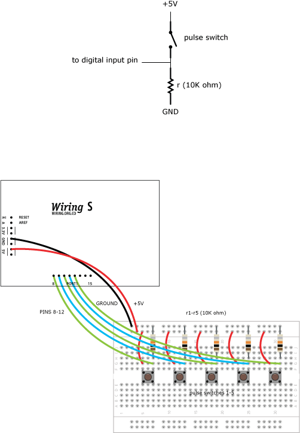

|


This example is for Wiring version 1.0 build 0100+. If you have a previous version, use the examples included with your software. If you see any errors or have comments, please let us know.
Switch Colors by CAMILO VILLEGAS
Demonstrates how to read multiple input from five switches and send data using the serial port to a processing application. The processing application change the color of a rectangle according to the data sent. For the Wiring boards v1 the on-board LED is on pin 48, on Wiring S the on-board LED is on pin 15.
Demonstrates how to read multiple input from five switches and send data using the serial port to a processing application. The processing application change the color of a rectangle according to the data sent. For the Wiring boards v1 the on-board LED is on pin 48, on Wiring S the on-board LED is on pin 15.

int sent = 0; int ledpin = WLED; // on-board LED int switchpin_a = 8; // switch connected to pin 8 int switchpin_b = 9; // switch connected to pin 9 int switchpin_c = 10; // switch connected to pin 10 int switchpin_d = 11; // switch connected to pin 11 int switchpin_e = 12; // switch connected to pin 12 void setup() { pinMode(ledpin, OUTPUT); // set on-board LED as OUTPUT pinMode(switchpin_a, INPUT); // pin 8 as INPUT pinMode(switchpin_b, INPUT); // pin 9 as INPUT pinMode(switchpin_c, INPUT); // pin 10 as INPUT pinMode(switchpin_d, INPUT); // pin 11 as INPUT pinMode(switchpin_e, INPUT); // pin 12 as INPUT Serial.begin(9600); // start serial communication at 9600bps digitalWrite(ledpin, HIGH); // turn ON the Wiring board LED } void loop() { if (digitalRead(switchpin_a) == HIGH) // if switch connected to pin 0 is ON { Serial.print('1'); // send 1 to Processing sent = 0; } else if (digitalRead(switchpin_b) == HIGH) // if switch connected to pin 1 is ON { Serial.print('2'); // send 2 to Processing sent = 0; } else if (digitalRead(switchpin_c) == HIGH) // if switch connected to pin 2 is ON { Serial.print('3'); // send 3 to Processing sent = 0; } else if (digitalRead(switchpin_d) == HIGH) // if switch connected to pin 3 is ON { Serial.print('4'); // send 4 to Processing sent = 0; } else if (digitalRead(switchpin_e) == HIGH) // if switch connected to pin 4 is ON { Serial.print('5'); // send 5 to Processing sent = 0; } else { if (sent == 0) { Serial.print('0'); // send 0 to Processing sent = 1; } } delay(100); // wait 100ms for next reading } /* Processing code for this example // Switch Colors // by CAMILO VILLEGAS // depending on the data received from Wiring through the serial port it // changes the fill color of a rectangle // Created 1 November 2005 import processing.serial.*; Serial port; // create serial port object int val; // variable to receive data from the serial port void setup() { size(200, 200); noStroke(); // List all the available serial ports in the output pane. // You will need to choose the port that the Wiring board is // connected to from this list. The first port in the list is // port #0 and the third port in the list is port #2. println(Serial.list()); // Open the port that the Wiring board is connected to (in this case #2) // Make sure to open the port at the same speed Wiring is using (9600bps) port = new Serial(this, Serial.list()[2], 9600); } void draw() { if ( 0 < port.available() ) // if data is available to read { val = port.read(); // read it and store it in 'val' } background(0); // clear background if ( val == '1' ) // if 1 was received { fill(100); // set fill color } else if ( val == '2' ) // if 2 was received { fill(0); // set fill color } else if ( val == '3' ) // if 3 was received { fill(0,100,0); // set fill color } else if ( val == '4' ) // if 4 was received { fill(0,0,100); // set fill color } else if ( val == '5' ) // if 5 was received { fill(100,0,0); // set fill color } else { // if other data was received (in this case 0) fill(255); // set fill to a different color } rect(50, 50, 100, 100); // draw rect } */